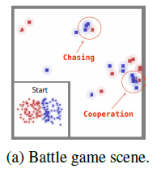
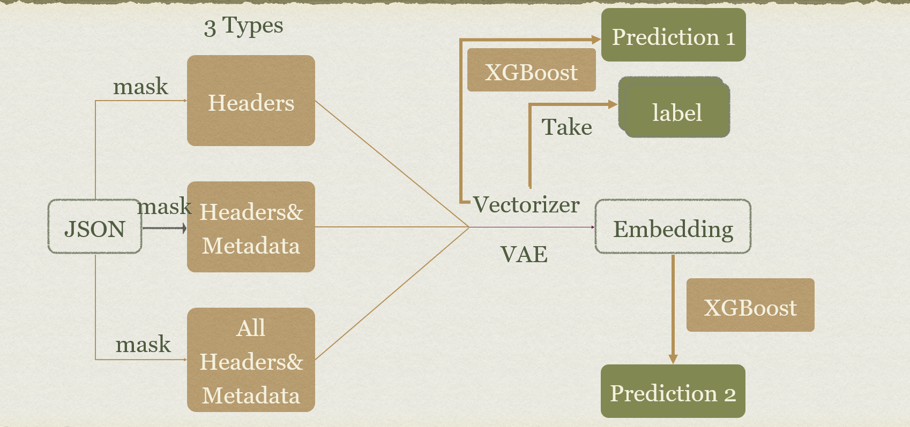
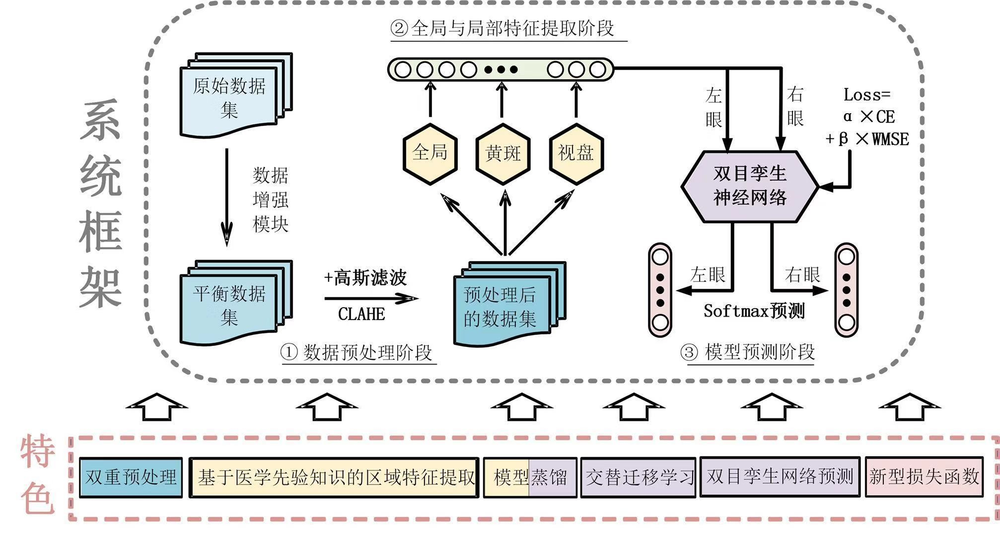

|
|
Xiangyu Liu
Hi, my name is Xiangyu Liu. I am currently a third-year student at Shanghai Jiao Tong University, China, majoring in Computer Science. I am also a member of Zhiyuan Honors Program of Engineering, which is an elite program for top 5% talented students.
CV /
GitHub
|
|
Contact me
| Email |
liuxiangyu999[AT]sjtu[DOT]edu[DOT]cn
xiangyuliu[AT]berkeley[DOT]edu
|
|
Education
|
Shanghai Jiao Tong University, China, from Sep. 2017 to present
Department of Computer Science & Zhiyuan College
|
|
University of California, Berkeley, USA, from Jan. 2020 to Present
Exchange Student
|
|
|
Experience
|
Research Interest
|
My research interests lie in the general area of machine learning, particularly in deep learning,
reinforcement learning and deep unsupervised learning, as well as their applications in sequential
decision making and multi-agent systems
|
|
Project
|

|
Empathetic Reasoning in Multi-Agent Reinforcement Learning
Advised by Weinan Zhang and Yong Yu, Apex Lab, June 2019 - Sep. 2019
We introduce the concept of empathy to symmetric Markov games where agents are able to reason the
evaluations and behaviours of other agents through their own models. Considering the mutual reasoning
between agents, the impact of empathy could be recursive. We propose a Q learning method with multi-level
empathetic reasoning for both competitive and cooperative environments.
We test our algorithm on a simple math game and MAgent. Our experiments demonstrate that empathetic reasoning improves the performance of standard Q-learners.
In cooperative environment, we can achieve the optimal solutions with the fastest speed. In competitive
environment, empathetic Q learners can easily defeat learners with only local rewards or only global rewards.
|
|

|
Characterizing Internet Hosts Using Deep Learning
advised by Yichao Chen, SJTU, Sep. 2019 - Dec. 2019
We develop a system to characterize Internet hosts using deep learning, leveraging Internet
scan data to produce numerical and lightweight representations of hosts. To do so, we first extract
binary tags from semi-structured texts collected from Censys then use the variational autoencoder (VAE) to construct
low-dimensional embeddings of our high-dimensional binary representations which do not rely
on specific applications. This universality makes the embeddings broadly applicable to a variety
of learning tasks whereby they can be used as input features. We present two such examples,
detecting and predicting malicious hosts, and unmasking hidden host attributes.
Comparing the trained models in their performance, speed, and robustness, we show that our embeddings
reports competitive performance compared with binary representations and can achieve
high accuracy for these learning tasks, while drastically reducing memory and computational
requirements for large-scale analysis.
|
|

|
Diabetic Retinopathy Detection
github
We propose a brand new framework, binocular twin neural network architecture combined with
region detection and extraction. We use commonCNNmodels to extract features ,and then combine
features of the left eye and right eye.
We further introduce the prior knowledge that only early lesions, symptomatic microangiomas often
appear around the macular area of the unique structure of the fundus into deep neural networks,
concurrently train CNNs to extract the macular disc area to augment features for classifications.
|
|
Scholarships and Awards
| A-class Scholarship for Excellent Academic Performance Awarded to top 1% students in SJTU every year, Shanghai Jiao Tong University, 2018 |
| National Scholarship Highest honor for undergraduates in China, awarded to top 0.2% students, Ministry of Education of China, 2018 & 2019 |
| 1st Prize in Chinese Mathematics Competitions The first place among students in SJTU, Chinese Mathematical Society, 2018 |
| Zhiyuan Honorary Scholarship Elite program scholarship for top 5% talented students, Shanghai Jiao Tong University, 2018 and 2019 |
|